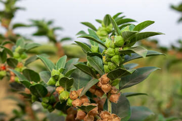

Ashwagandha is native to the Indian subcontinent but is also found in parts of:
South Asia: India, Nepal, Pakistan, Sri Lanka
Southeast Asia: Afghanistan
Other Regions: It is cultivated in parts of Africa and the Mediterranean region as well
Ashwagandha grows in dry, subtropical regions. It thrives in arid, semi-arid climates and can be found in
sandy, rocky, and well-drained soils. It is widely cultivated in central India, particularly in Madhya
Pradesh, Rajasthan, and Gujarat.

Medicinal Uses
Ashwagandha has a wide range of medicinal applications, particularly in Ayurveda, where it is considered
a Rasayana (rejuvenator):
Stress Relief and Adaptogen: Ashwagandha is known for its adaptogenic properties, helping the
body cope with stress, anxiety, and fatigue.
Immune Support: It helps boost immunity and supports the body’s resistance to infections and
diseases.
Energy and Vitality: Ashwagandha is used to improve energy levels, enhance stamina, and
combat physical and mental fatigue.
Cognitive Function: It is known to support brain health, enhance memory, and improve
cognitive function.
Anti-inflammatory and Antioxidant: Ashwagandha has anti-inflammatory properties that help
reduce inflammation and oxidative stress, promoting overall health.
Hormonal Balance: Ashwagandha helps balance hormones, making it useful for managing
conditions like thyroid disorders and reproductive health issues in both men and women.
Muscle Strength and Recovery: It is used by athletes to enhance muscle strength, support
recovery, and reduce muscle damage.
Methods of Cultivation
Climate and Soil Requirements: Ashwagandha thrives in dry, arid, and semi-arid climates. It
prefers sandy or loamy soils with good drainage. The plant can tolerate drought conditions but
cannot withstand waterlogging. It requires full sunlight for optimal growth.
Propagation: Ashwagandha is typically propagated through seeds. Seeds are sown directly in
the field or in nursery beds before transplanting to the main field.
Planting:Seeds are usually sown at the beginning of the monsoon season. The seeds should be
sown at a depth of 1-2 cm, with rows spaced about 60 cm apart. The optimal time for sowing is
between June and July, and seedlings are transplanted when they are 25-30 days old..
Watering: Ashwagandha requires minimal watering, especially once established. Excessive
watering can harm the plant. Irrigation is only needed during prolonged dry periods.
Pruning: Regular pruning is not required for Ashwagandha, but removing weeds and keeping the
plant base clean is essential for healthy growth.
Pest Control: The plant is generally resistant to pests and diseases, but it can occasionally
be affected by insects like aphids or fungal infections. Organic methods, such as neem oil sprays,
are effective for controlling pests.
Harvesting: Ashwagandha roots are the primary part used for medicinal purposes. The roots are
harvested after 150-180 days when the berries turn red and the plant sheds its leaves. Roots are
carefully dug up, cleaned, and dried in the sun for medicinal use. The leaves and seeds can also be
harvested for various applications.
MultiMedia Content
To know more about method of cultivation click here